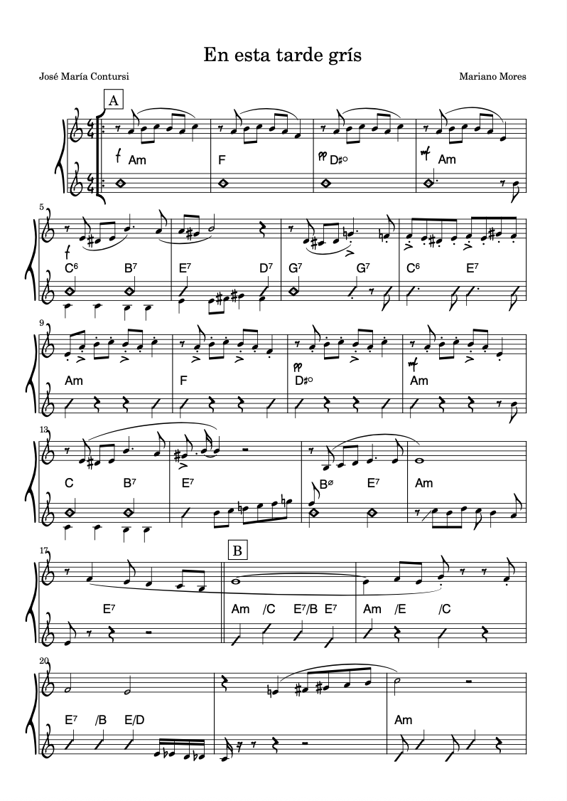

Community Project
The Parrilla Project
An online gathering of musicians creating enhanced leadsheets for classic tangos — building a free, open body of work, and a community that can play together when the world allows.
Get involvedThe work
More than a leadsheet.
Classic tango repertoire is rich with detail — rhythmic nuance, orchestral color, the particular logic of each orchestra's style. Standard leadsheets flatten all of that. Our enhanced format preserves the structure that makes tango tango, while leaving room for the improvisation that keeps it alive.
Each chart is a collaborative transcription, built through deep listening and close attention to the source recordings.
Deep listening
We train our ears to hear what's really happening in classic recordings — detail by detail.
Transcription
Building chops in notation and transcription through real, meaningful repertoire.
Orchestra study
Each chart deepens familiarity with a specific orchestra and what makes their sound unique.
Community
Players from around the world, working toward a shared repertoire they can play together.
Example
What a chart looks like.
Here's a completed chart from the collection — an arrangement by Aníbal Troilo's orchestra.

Get involved
Join the project.
The Parrilla Project meets online. There's a lot to talk about — the best way in is to reach out directly and we'll find a time to connect.
All skill levels welcome. If you love tango and want to go deeper, you belong here.
The collection is free and always will be. The community is the point.